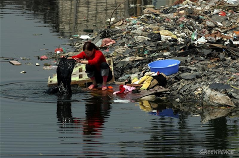
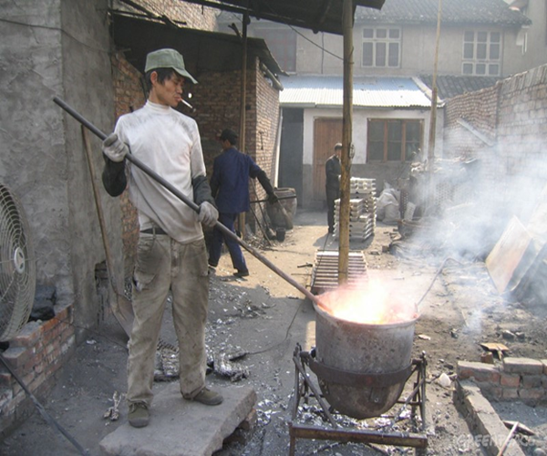
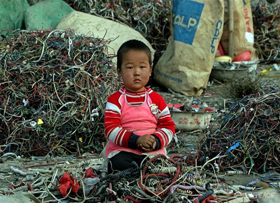
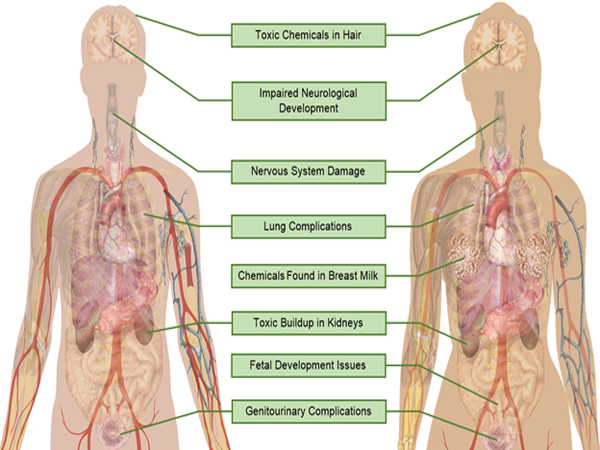

Introduction
E-waste is a large contributor of harmful chemicals to world as a result of components of the electronics, chemicals used in processing the waste, and chemicals used in recycling processes. Due to this, E-waste is reprehensible for increases the levels of chemicals such as lead, mercury, cadmium, polycyclic aromatic hydrocarbons (PAHs), cyanide, dioxins, and thousands more in the environment. Currently, the properties of many of the lesser-studied chemicals are unknown by scientists. This poses a serious threat for two overarching reasons. One, the presence of the deleterious chemicals that result from E-waste can pollute the air, soil, and water supplies of the environment. Subsequently, these environmental shifts can have pernicious effects on humans that live in the afflicted areas. As you read the article, be sure to hover on the pictures to learn about these effects currently afflicting the city of Guiyu, China.
The Effects of E-Waste on the Environment:
E-Waste can cause critical damage to the environment. As E-waste rests on a site, chemicals from the electronics themselves or from acidic substances used to process E-waste slowly begin to leach into the soil. Over time, this can eventually reach and contaminate the groundwater. E-waste buildup can also affect neighboring or nearby rivers, causing increased levels of chemicals from E-waste. Overall, E-waste introduces caustic chemicals into water supplies that make the water dangerous for any animals that depend on the water sources.
-  The city of Guiyu, China is often used as a model to demonstrate these hazardous effects. Guiyu is the often considered to be the biggest E-waste recycling site in the world and is also considered to be one of the most polluted cities in the world as a result. In rivers surrounding Guiyu, the common fish known as carp were shown to have increased levels of polybrominated diphenyl ether (PBDEs) and polychlorinated biphenyl (PCBs). This trend was also shown in prawns and waterfowl that inhabit the rivers.
Woman in Guiyu, China, sitting next to a river ridden with E-Waste. Hover to read more! Obtained from www.greenpeace.org.
As chemicals from the E-waste leach into the soil, the soil is left contaminated as well. Toxic chemicals such as PCBs, lead, mercury, and many more. As plants carry out their typical functions, many of these toxic chemicals are absorbed and manifest themselves in the plants. The consumption of these plants can have many negative impacts on human health. In short, E-waste upsets the ecological balance of ecosystems by polluting them with harmful chemicals which ultimately circulate through the organisms found in the ecosystem.
- In the soil in and around Guiyu, China, the soil was found to have elevated levels of PBDEs, PCBs, PAHs, lead, tin, cadmium, mercury, and many more chemicals. Furthermore, plants growing in this soil demonstrated increased levels of these chemicals. This was shown in the leaves and stems of plants such as ferns, sorghums, and flowers. Most importantly, this was also shown in rice plants, which is a staple crop for the citizens of Guiyu. Consuming these crops would cause the intake of pernicious chemicals, which can have detrimental health effects.
A common rice field in China. Hover to read more! Obtained from commons.wikimedia.org.
E-waste also poses as an issue for air pollution due to many of the methods used in processing E-waste. This is primarily due to the two methods used to process E-waste known as open-air burning and combustion. Open-air burning is used to retrieve valuable metals from the E-waste, however, leads to atmospheric release of many harmful chemicals. The following combustion of E-waste releases small particles of caustic chemicals, which can then get inhaled.
-  Samples were taken of the dust from workshops in Guiyu in order to ascertain the chemicals that residents were constantly inhaling. Tests indicated that the air in Guiyu has significantly increased levels of lead, copper, zinc, cadmium, indium, tin, antimony, and bismuth. The presence of these chemicals in the air can be very destructive to human health, due to inhalation and absorption from human skin. These chemicals also affect efficacy of plants undergoing cellular respiration because plants depend on air in order to function properly.
A man open-air burning electronics to extract precious metals. Hover to read more! Obtained from www.greenpeace.org.
The Effects of E-Waste on Human Health:
Children are considered to be at the greatest risk for health concerns due to the exposure from chemicals from E-waste. In developing countries such as Ghana, Nigeria, India, and China, child labor is often used to help process the E-waste. In these positions, children often sift through E-waste and look for components, dismantle E-waste, aid in processing the E-waste, in addition to many more duties, which greatly exposes children to the harmful chemicals found in E-waste and detrimentally affect their growth and development.
-  The city of Guiyu, China was also used to analyze the health effects of E-waste. 80% of the children in Guiyu experience respiratory problems due to the high levels of pollutants in the air resulting from E-waste. These children are also at a high risk of suffering from lead poisoning. Child exposure to these chemicals is also a major concern because it may impact their development, leading to behavioral and psychological impairment later in life.
A child sitting among an ever-growing pile of E-waste. Hover to read more! Obtained from www.greenpeace.org.
While E-waste poses a significant threat to children, all individuals that live in regions overwhelmed by E-waste are susceptible to its hazardous effects. Research from the National Institute of Health (NIH) provides information of the effects of several chemicals on the human body. Chemicals such as lead, mercury, and cadmium can cause damage to the entire nervous system, genitourinary system (the combined urinary and reproductive system), fetal development, and can lead to toxic buildup in bodily organs, such as the kidneys. Many of the substances found in E-waste also have the potential to cause damage to the DNA of humans and other organisms, which may lead to genetic mutations.
-  Scientists have used the city of Guiyu, China in order to study the effects of E-waste on human health over time. Hair and blood samples were taken from citizens, and both samples indicated that the residents of Guiyu had dangerously increased levels of PBDEs and PCBs. Researchers also took samples of infants' umbilical cord blood, which was shown to have increased levels of chromium, which can lead to DNA damage. The breast milk of mothers from Guiyu was also analyzed, and the breast milk was shown to have increased concentrations of PCBs. As a result from this, many of the general residents of Guiyu experience maladies such as neurological, bone, and digestive complications, in addition to many more health concerns.
An infographic illustrating the health problems that may arise due to E-waste. Hover to read more!